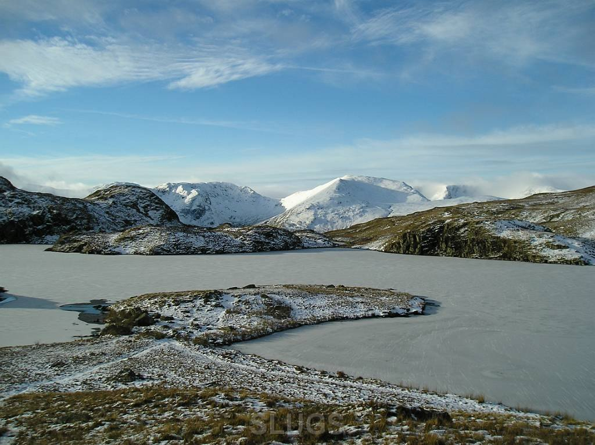
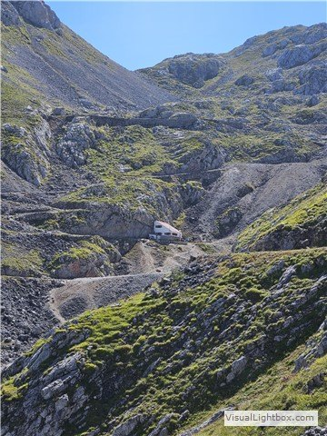
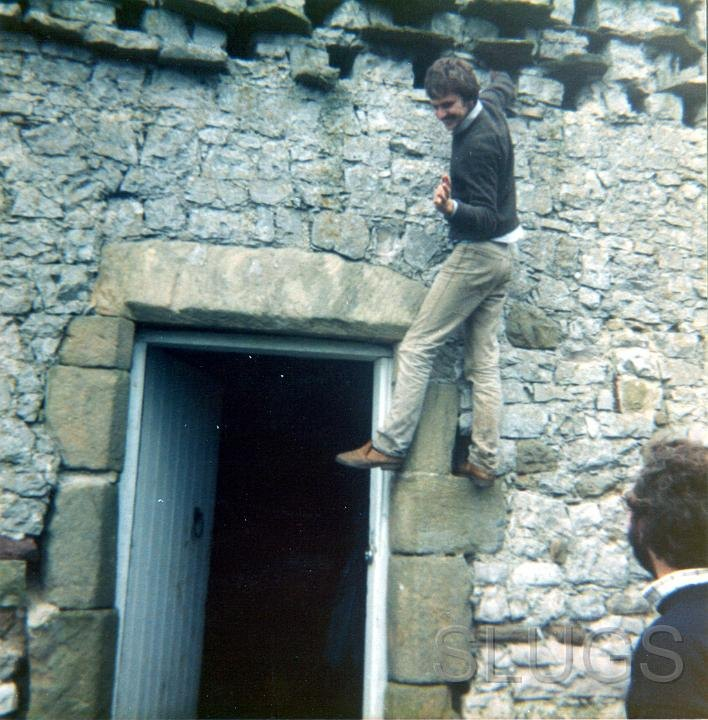

FRIENDS ABOVE & BELOW GROUND
Old enough to
know better.
Still sluggy.
The photographs, stories and shared adventures of the Society of Lancaster University Graduate Speleologists.
Still no rules. Still plenty of stories.

FIND YOUR WAY AROUND
Good times. Kept together.
Start with a place, a year or a familiar face.

SPAIN & TRESVISO
Back to the Picos.
Expeditions, village life and return visits, from 1970 to 2025.
Explore the collections ↗
LANCASTER & CLAPDALE
Where it all began.
The early LUSS years, Percy Road and life at the barn.
Open the photo archive ↗THE EVENT ARCHIVE
Remember
that weekend?
Caves, hills, bikes, birthdays and the occasional banquet. Browse the reports by year.
Find a club meet ↗A RECENT RETURN
Tresviso, 2025.
Another visit. More photographs. Revisit the village and the mountains in the newest photo collection in the archive.
View the 2025 photographs ↗LOOKING FOR SOMETHING?
A name. A place. A year.
ARCHIVE UPDATE · 14 NOVEMBER 2026
Keeping the archive connected.
We have checked the links throughout this copy of the archive, repaired broken paths and marked content that is no longer available.
Read the link-check report and what it means →